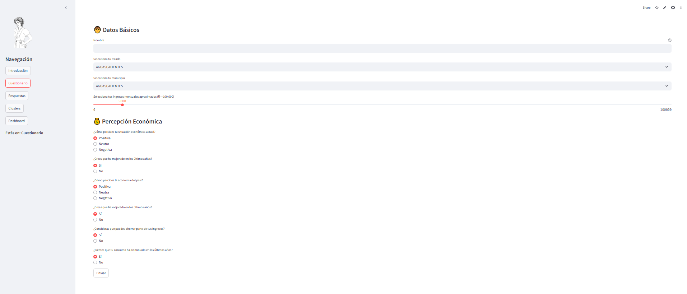
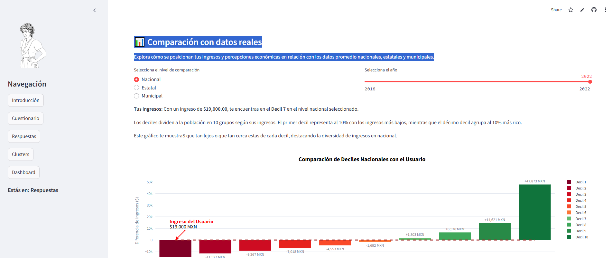
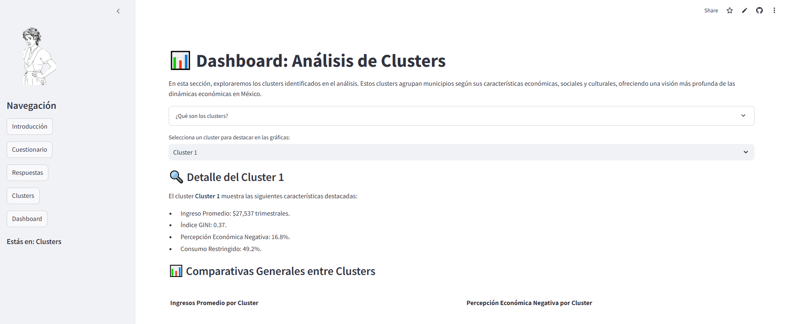
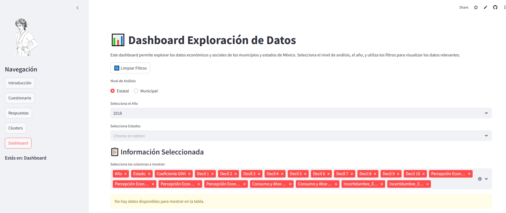

Maqueta
📊 Dashboard Interactivo: El Síndrome de Doña Florinda
Introducción
El dashboard “El Síndrome de Doña Florinda” es una herramienta interactiva diseñada para analizar cómo la percepción económica en México está influenciada por factores sociales, económicos y de desigualdad. Inspirado en el personaje de El Chavo del 8, este fenómeno refleja cómo las percepciones económicas están moldeadas no solo por la realidad objetiva, sino también por las comparaciones sociales.
Objetivos del Dashboard
- Identificar cómo se agrupan los municipios en México según características económicas y sociales.
- Explorar los factores que moldean las percepciones económicas en diferentes regiones.
- Permitir a los usuarios comparar su situación económica personal con los promedios municipales, estatales y nacionales.
Estructura del Dashboard
2️⃣ Introducción
Esta sección presenta el contexto del análisis:
Tema Principal: Cómo la desigualdad y las expectativas moldean la percepción económica.
Datos utilizados: Encuestas nacionales (ENIGH y ENCO) para explorar ingresos, consumo, ahorro y percepciones.
Explicación del título: “El Síndrome de Doña Florinda” ilustra cómo las percepciones económicas están influenciadas por comparaciones con el entorno.
3️⃣ Cuestionario
Un formulario interactivo donde los usuarios ingresan información personal:
Datos básicos: Nombre, estado, municipio, ingresos.
Percepción económica:
Opinión sobre su situación personal y la economía nacional.
Opinión sobre cambios en ahorro y consumo.
Los datos ingresados se procesan para personalizar el análisis.

4️⃣ Respuestas
Comparativa personalizada que posiciona al usuario frente a promedios:
Niveles de comparación:
Nacional
Estatal
Municipal
Aspectos analizados:
Distribución de ingresos por deciles.
Coeficiente GINI (desigualdad).
Percepciones económicas personales y nacionales.

5️⃣ Clústers
Sección que detalla los grupos de municipios identificados por sus similitudes económicas y sociales:
Explicación: Los clústers son agrupaciones basadas en patrones comunes.
Visualizaciones:
Ingreso promedio.
Índice GINI.
Percepción económica negativa.
Consumo restringido.
Los usuarios pueden explorar las características específicas de cada clúster.

6️⃣ Dashboard Exploratorio
Una herramienta para explorar datos económicos y sociales de México:
Niveles de análisis: Estatal y Municipal.
Filtros disponibles:
Año: 2018, 2020, 2022.
Estado y Municipio.
Gráficos interactivos:
Coeficiente GINI.
Distribución de ingresos por deciles.
Categorías económicas: percepciones y patrones de consumo.

Tecnologías y Código
- Framework: Streamlit para visualizaciones y navegación.
- Librerías:
Pandas: Procesamiento y análisis de datos.Plotly: Gráficos interactivos.Matplotlib: Visualización de barras personalizadas.
- Estructura del Proyecto:
main.py: Controlador principal de la aplicación.visualizations.py: Gráficos personalizados.dashboard.py: Lógica del dashboard exploratorio.